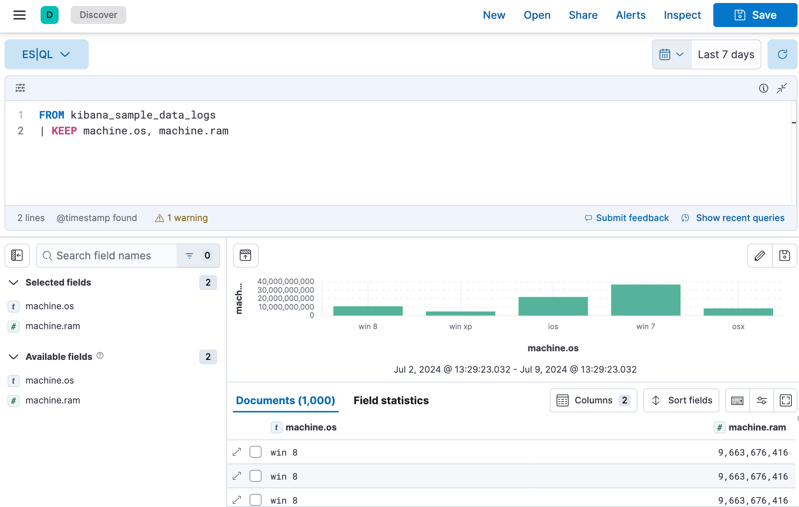
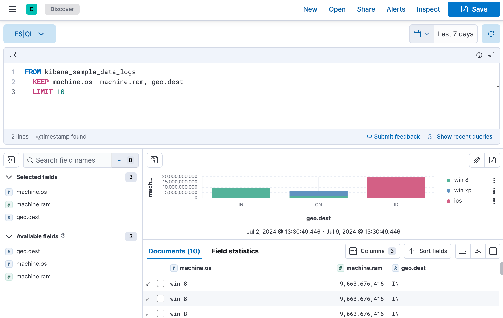
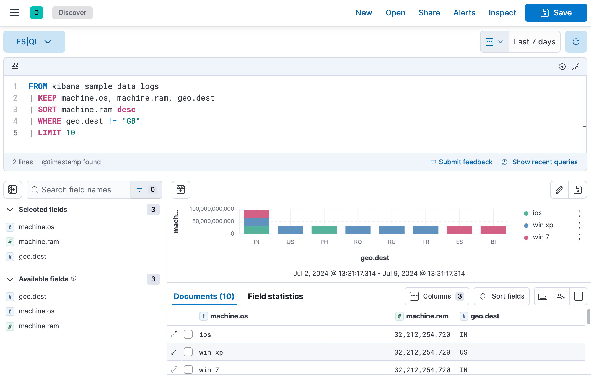

Using ES|QL
editThe Elasticsearch Query Language, ES|QL, makes it easier to explore your data without leaving Discover.
In this tutorial we’ll use the Kibana sample web logs in Discover and Lens to explore the data and create visualizations.
Prerequisite
editTo be able to select Language ES|QL from the Data views menu the enableESQL setting must be enabled from Stack Management > Advanced Settings. It is enabled by default.
Use ES|QL
editTo load the sample data:
- On the home page, click Try sample data.
- Click Other sample data sets.
- On the Sample web logs card, click Add data.
- Open the main menu and select Discover.
- From the Data views menu, select Language ES|QL.
Let’s say we want to find out what operating system users have and how much RAM is on their machine.
- Set the time range to Last 7 days.
-
Expand
 the query bar.
the query bar.
- Put each processing command on a new line for better readability.
-
Copy the query below:
FROM kibana_sample_data_logs | KEEP machine.os, machine.ram
-
Click ▶Run.

ES|QL keywords are not case sensitive.
Let’s add geo.dest to our query, to find out the geographical destination of the visits, and limit the results.
-
Copy the query below:
FROM kibana_sample_data_logs | KEEP machine.os, machine.ram, geo.dest | LIMIT 10
-
Click ▶Run.

Let’s sort the data by machine ram and filter out the destination GB.
-
Copy the query below:
FROM kibana_sample_data_logs | KEEP machine.os, machine.ram, geo.dest | SORT machine.ram desc | WHERE geo.dest != "GB" | LIMIT 10
-
Click ▶Run.

- Click Save to save the query and visualization to a dashboard.
To make changes to the visualization you can use the visualization drop-down. To make changes to the colors used or the axes, or click the pencil icon. This opens an in-line editor where you can change the colors and axes of the visualization.
For the complete ES|QL documentation, including tutorials, examples and the full syntax reference, refer to the Elasticsearch documentation. For a more detailed overview of ES|QL in Kibana, refer to Use ES|QL in Kibana.